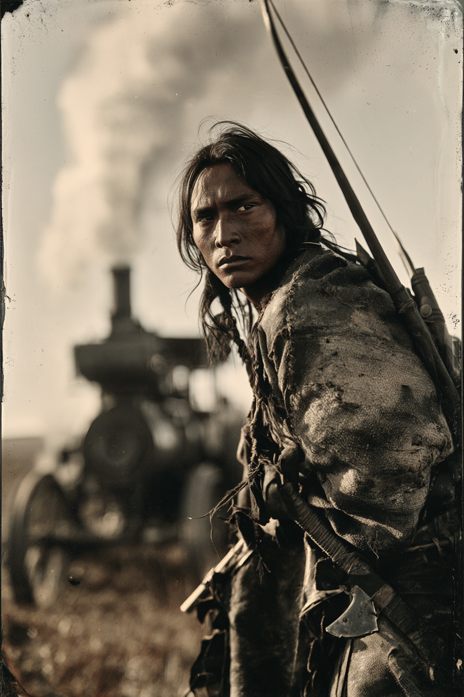

Archetyp: WARRIOR (Krieger)
Offizieller PEG-Pregen (Pregens_Deadlands01.pdf, Deadlands Reloaded), für SWADE neu gebaut.
Sein Schamane gab ihm den neuen Namen und schickte ihn in die Welt des weißen Mannes hinaus. Er wusste: Diese Neugier ist erst gestillt, wenn sie die Gefahr der Technik mit eigenen Augen gesehen hat.
| Agility | d8 | 2 |
| Smarts | d4 | 0 |
| Spirit | d6 | 1 |
| Strength | d6 | 1 |
| Vigor | d6 | 1 |
| Skill | Attr. | Die | Pts. |
|---|---|---|---|
| Fighting | Agi | d8 | 3 |
| Shooting | Agi | d8 | 3 |
| Riding | Agi | d6 | 2 |
| Survival | Sma | d6 | 3 |
| Notice | Sma | d6 | 2 |
| Language (English) | Sma | d4 | 1 |
| Weapon | Range | Damage | AP | RoF | Wt. | Cost |
|---|---|---|---|---|---|---|
| Bogen | 12/24/48 | 2W6 | – | 1 | 1 | $3 |
| 1 Schuss, Mindeststärke W6 | ||||||
| Tomahawk | 3/6/12 | Stä+W6 | – | 1 | 1,5 | $3 |
| Wurf und Nahkampf | ||||||
Eid auf die Alten Bräuche: freie Wiederholung auf Willenskraft, solange er keine moderne Technik anfasst — und 24 Stunden weg, wenn doch
Brawny: Größe und Robustheit +1; Stärke zählt als W8 für Traglast und Mindeststärke
Guts: freie Wiederholung bei Furchtproben
Hintergrund. „Plays“, wie seine nichtindianischen Freunde ihn nennen, folgt den Alten Bräuchen — aber nur, weil er glaubt, dass es das Richtige ist. In Wahrheit faszinieren ihn dampfende Lokomotiven, klirrende Maschinen und rotierende Gewehre, die Stürme aus Metall speien. Sein Schamane gab ihm den neuen Namen und trug ihm auf, in die Welt des weißen Mannes hinauszuziehen: Er wusste, dass diese Neugier erst Ruhe gibt, wenn sie die Gefahr der Technik aus der Nähe gesehen hat. Also reitet einer durch den Unheimlichen Westen, der jede Maschine ansehen darf und keine anfassen — und der jeden Abend aufs Neue entscheidet, was von beidem er heute war: Wächter oder Zuschauer.
Build. Geschicklichkeit W8, Verstand W4, Geist W6, Stärke W6, Konstitution W6 · Parade 6, Robustheit 6 (5 + 1 Kräftig) Kämpfen W8, Schießen W8, Reiten W6, Überleben W6, Bemerken W6, Sprache (Englisch) W4 Talente: Brawny (Kräftig), Guts (Mumm) Handicaps: Curious (Neugierig) — Major: die Technik der Bleichgesichter, ausdrücklich · Outsider (Außenseiter) — Minor: ein Indianer in der Gesellschaft der Weißen · Oath of the Old Ways (Eid auf die Alten Bräuche) — Minor (GB S. 15) Reloadeds unbestimmtes „Vow (Old Ways)“ hat in SWADE-Deadlands einen gedruckten Namen: der Eid auf die Alten Bräuche — keine moderne Technik, dafür eine freie Wiederholung auf jede Willenskraftprobe. Aus Tracking wurde Überleben, aus Knowledge (English) Sprache (Englisch). Stärke W6 statt W8 — dafür zählt sie dank Kräftig als W8, wo es zählt: Traglast und Mindeststärke. Parade 6 und Robustheit 6 stimmen mit dem PEG-Original überein.
Aufhänger. Neugierig (schwer) und der Eid sind dieselbe Figur von zwei Seiten: Er muss hinsehen und darf nicht anfassen. Der Marshal braucht keinen Plot-Haken — er braucht eine Dampfkutsche am Straßenrand. Und irgendwann kommt der Moment, für den der Schamane ihn wirklich losgeschickt hat: eine Situation, in der das Anfassen der Maschine Leben rettet und den Eid bricht. Was Plays dann tut, ist die Antwort, die er seinem Schamanen schuldet — in beide Richtungen.
Notizen. So sehen die fünf Zeilen des Bogens am Tisch aus.
Warum es Spaß macht. Der dritte Krieger im Ordner, und der mit der größten Reichweite: Kämpfen W8 und Schießen W8, Tomahawk für nah, Bogen für fern, kein Nachladen, keine Machtliste, kein Patronengeld. Robustheit 6 verzeiht Anfängerfehler. Und der Charakter hat den elegantesten eingebauten Konflikt der fünf PEG-Pregens: seine Schwäche zieht ihn zu genau dem hin, was sein Eid ihm verbietet — eine Figur, die der Marshal mit einem einzigen Satzbild („auf dem Hof steht ein Dampftraktor“) in Bewegung setzt.
Regelgrundlage: Regelnotizen · Archetyp-Notizen